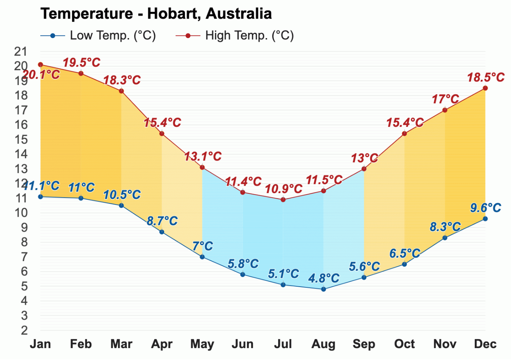
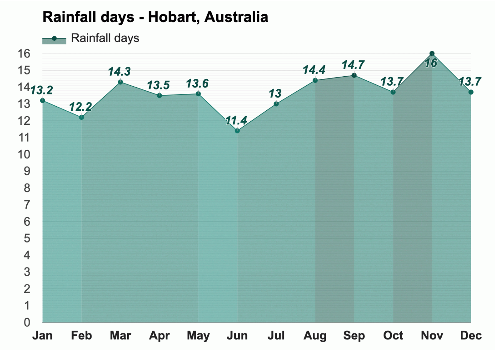
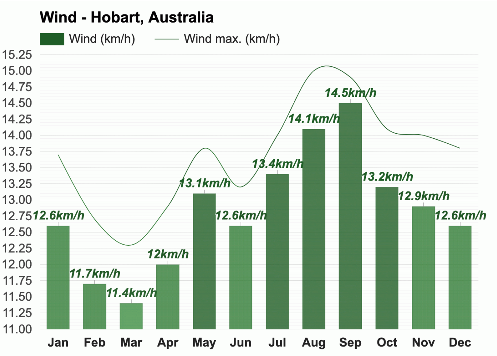
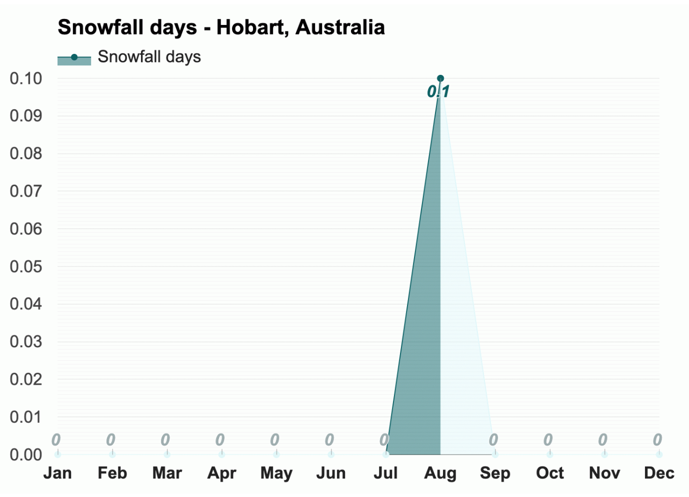

Temperature 
The warmest month is January, with an average high-temperature of
20.1°C (68.2°F) and an average low-temperature of 11.1°C (52°F).
With an average high-temperature of 10.9°C (51.6°F) and an average
low-temperature of 5.1°C (41.2°F), July is the coldest month in
Hobart.

With an average of 9.2h of sunshine, December has the most sunshine
of the year in Hobart, Australia.The month with the least sunshine
in Hobart is June, with an average of 5.3h of sunshine.
Rain
Throughout the year, in Canberra, there are 129.1 rainfall days, and
392mm (15.43") of precipitation is accumulated.

The most humid month in Hobart, Australia, is June, with an average
relative humidity of 82%, whereas the rainiest months in Hobart,
Australia, are August and November, with an average 38mm (1.5") of
rainfall.
Wind

Snow
The only month with snowfall is August, when snow falls for 0.1
days...

* The above information is sourced from Weather-At. Take a
visit for
more information...
Population 224,000 (Metro)
Median Age 39
Ancestry
The most common ancestries in Hobart were English 29.4%,
Australian 23.7%, Irish 9.7%, Scottish 8.3% and Chinese 4.4%.
Country of birth
In Hobart, 71.2% of people were born in Australia. The most common
countries of birth were England 4.1%, China (excludes SARs and
Taiwan) 3.5%, India 1.2%, New Zealand 1.1% and Malaysia 1.0%.
Religion
The most common responses for religion in Hobart were No Religion,
so described 46.4%, Catholic 14.2%, Anglican 13.7%, Not stated
10.0% and Uniting Church 2.1%.
* The above information is sourced from
Australian Bureau of Statitics. Take a visit for
more information...
Skate and BMX
Over the last 20 years there has been a significant growth in the
interest and participation of action sports such as skateboarding
and BMX.
Albury Skate Park
Thurgoona Skate Park
Springdale Heights Pump Track
Boat ramps
There are five boat ramps in the Albury region, with access to
either the Murray River or Lake Hume. All ramps offer easy access to
the water as well as nearby services.
Lake Hume Village Boat Ramp
Kremur Street
Mungabareena Reserve
Walking and cycling trails
Albury has more than 50 kilometres of interlinked on and off-road
trails, offering walkers and cyclists of all ages, safe and
enjoyable access to our natural environment and places of interest.
Heritage Walk
Nail Can Hill / Ridge Trail
Bungambrawatha Creek Trail
Rainforest Walk
* The above information is sourced from
Albury City Government. Take a visit for
more information...